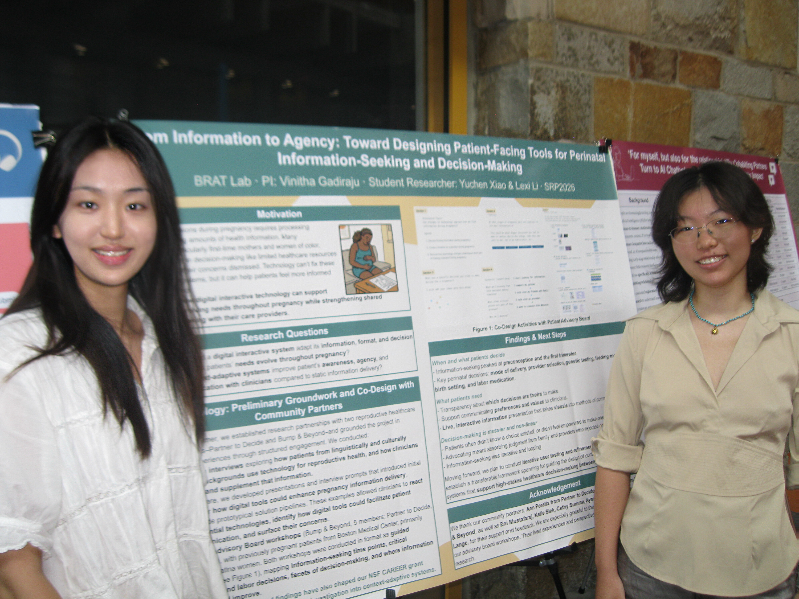

Research
I am a student researcher in the BRAT HCI Lab at Wellesley College, where I have spent the past year navigating how digital interactive technology can support communication and trust between patients and clinicians in reproductive health.

How the direction evolved
When I joined the lab, our research focused on how digital interactions could strengthen the patient–clinician relationship in PCOS context.
That focus grew through the research itself. Early interviews pointed us toward the perinatal (pregnancy-related) experience, where information overload, high-stakes decisions, and equity gaps are especially pronounced. We broadened our scope accordingly — from a narrower reproductive-health condition to the wider question of how people seek information and make decisions throughout pregnancy.
Thoughout the journey, I learned that every research direction is shaped by what you learn, not just by what you planned.
Perinatal information-seeking & decision-making
Our work asks how digital tools can help patients navigate pregnancy-related decisions — and how those tools should adapt as a patient’s needs change over time.
Two research questions anchor the project:
- How should a digital interactive system adapt its information, format, and decision support as patients’ needs evolve throughout pregnancy?
- Can context-adaptive systems improve patients’ confidence, agency, and communication with clinicians, compared to static information delivery?
To ground the work in real experiences, our team partnered with reproductive-healthcare community organizations in the Boston area and engaged directly with patients and clinicians through interviews and co-design workshops, mapping when people seek information, which decisions matter most across pregnancy and labor, and where access to good information breaks down.
What we are learning
At a high level, a few themes have emerged from this preliminary work:
- Timing matters. Information needs are not constant — they spike at particular moments in the pregnancy journey.
- Agency is as important as information. Patients don’t just need facts; they need clarity about which decisions are theirs to make, and support in advocating their preferences and values to their providers.
- Decision-making is non-linear. People often don’t know a choice exists, or don’t feel empowered to make one, and their information-seeking loops rather than following a straight path.
Why it matters & Where it is going
This preliminary groundwork is laying the foundation for a longer-term investigation into context-adaptive interactive systems for high-stakes healthcare decision-making. Our next steps focus on iterative prototyping and user testing, working toward a design framework that can generalize beyond any single context — and we’re continuing to share this research through academic poster sessions.
Some project details are omitted here while the work is ongoing and unpublished.